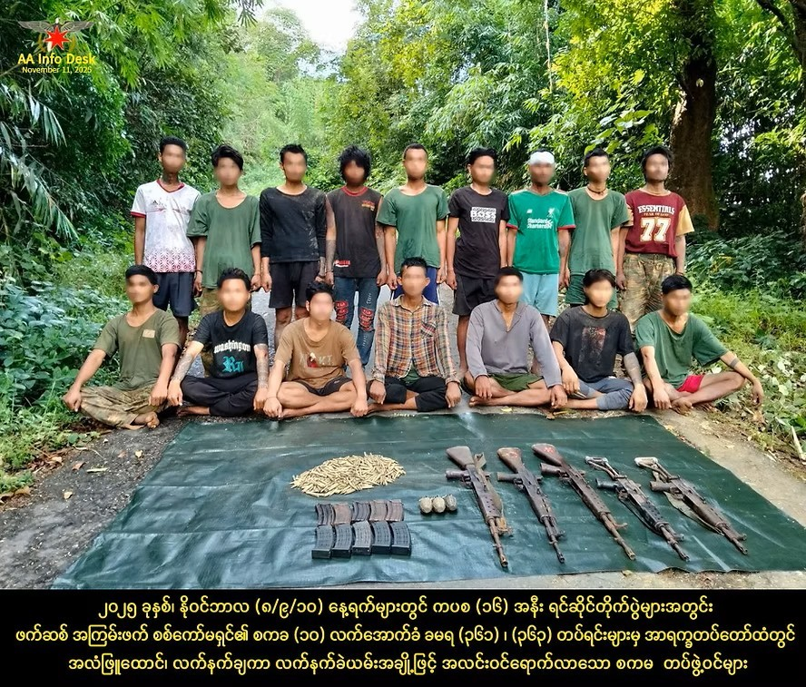

3 days ago
တိုက်ပွဲသတိထုတ်ပြန်ချက်
နတ်ရေကန်ဗျူဟာကုန်း၊ လေလာတောင်၊ ကပစ (၁၆) အနီးပတ်ဝန်းကျင်များ၌ ဖြစ်ပွားလျက်ရှိသောတိုက်ပွဲများ နှင့် ရက္ခိုင်-ဧရာဝတီတိုင်းအစပ် တိုက်ပွဲများအတွင်းမှ ကစဉ့်ကလျားထွက်ပြေးနေကြသော ဖက်ဆစ် အကြမ်းဖက် စစ်ကော်မရှင် တပ်ဖွဲ့ဝင်အချို့အား လက်ရဖမ်းဆီးရရှိမှု ရှိနေသကဲ့သို့ အလံဖြူထောင် အလင်းဝင်ရောက်လာသူများလည်း ဆက်တိုက်ရှိနေ ၂၀၂၅ ခုနှစ်၊ နိုဝင်ဘာလ (၁၁) ရက် ရက္ခိုင်-ပဲခူးတိုင်းအစပ်၊ ရက္ခိုင်-မကွေးတိုင်းအစပ်နှင့် ရက္ခိုင်-ဧရာဝတီတိုင်းအစပ်တို့တွင် ဖက်ဆစ် အကြမ်းဖက် စစ်ကော်မ ရှင်၏ ထိုးစစ်များကို အာရက္ခတပ်တော်မှ ခုခံစစ်များနှင့်အတူ တန်ပြန်ထိုးစစ်များဖြင့် အကောင်းဆုံး တုံ့ပြန်ဆင်နွှဲလျက်ရှိသည်။ နေ့စဉ်ရက်ဆက်ပြင်းထန်နေသော တိုက်ပွဲများအတွင်း စစ်ရေးအရ မည်သို့မျှ ယှဉ်နိုင်စွမ်းမရှိသည့်အပြင် စစ်ကော်မရှင်၏ မတရားသဖြင့် အတင်းအဓမ္မစစ်မှုထမ်းရန် စုဆောင်းခြင်းခံရသော တပ်ဖွဲ့ဝင်သစ်များသည်လည်း တိုက်ခိုက်လိုစိတ်မရှိဘဲ တိုက်ပွဲဖြစ်ပွားရာနေရာများမှ အခွင့်အရေးရလျှင်ရသလို နေ့စဉ်နှင့်အမျှ ထွက်ပြေးလျက် ရှိကြသည်။ ထို့အပြင် အချို့သော တပ်ဖွဲ့ဝင်များမှာ မိမိတို့ထံတွင် အလံဖြူထောင် လက်နက်ချကာ အလင်း ဝင်ရောက်လျက်ရှိကြသည်။ ထို့အတူ အချို့သော စကမတပ်ဖွဲ့ဝင်များကို တိုက်ပွဲအတွင်း (လက်နက်ဖြင့်/ လက်နက်မဲ့) လက်ရဖမ်းဆီးရမိခဲ့သည်။ ၂၀၂၅ ခုနှစ်၊ နိုဝင်ဘာလ (၈/၉/၁၀) ရက်များအတွင်း ကပစ (၁၆) အနီးတိုက်ပွဲများအတွင်းမှ ဖက်ဆစ် အကြမ်းဖက် စစ်ကော်မရှင်၏ စကခ (၁၀) လက်အောက်ခံ ခမရ (၃၆၁) နှင့် ခမရ (၃၆၃) တပ်ရင်းများမှ (အလံဖြူထောင်၊ တပ်ပြေး၊ လက်ရဖမ်းဆီးရမိသူ) စုစုပေါင်း (၁၆) ဦးအထိ ရှိခဲ့သည်။ ထို့အပြင် အခြားသော စစ်မြေပြင်တစ်ခုဖြစ်သည့် ပဲခူးတိုင်း၊ ပန်းတောင်းမြို့နယ်၊ ညောင်ကျိုးကျေးရွာ၏ အရှေ့ဘက် မီတာ (၂၅၀၀) အကွာ၌ရှိသော လေလာတောင် ပတ်ဝန်းကျင်အနီး တိုက်ပွဲများမှလည်း ၂၀၂၅ ခုနှစ်၊ နိုဝင်ဘာလ (၈/၉) ရက်နေ့များအတွင်း ဖက်ဆစ် အကြမ်းဖက် စစ်ကော်မရှင်၏ စကခ (၁၀) လက်အောက်ခံ ခမရ (၃၆၈) တပ်ရင်းတစ်ခုတည်းမှ အလံဖြူထောင်၊ တပ်ပြေး၊ လက်ရဖမ်းဆီးရမိသူ စုစုပေါင်း (၁၀) ဦးရှိခဲ့သည်။ ၂၀၂၅ ခုနှစ်၊ နိုဝင်ဘာလ (၉) ရက်နေ့တွင်လည်း ပဲခူးတိုင်း၊ ပန်းတောင်းမြို့နယ်၊ ကပစ (၁၆) အနီး ရင်ဆိုင် တိုက်ပွဲများအတွင်း ဖက်ဆစ် အကြမ်းဖက် စစ်ကော်မရှင်၏ စကခ (၁၀) လက်အောက်ခံ ခမရ (၃၆၃) တပ်ရင်းမှ စကမ တပ်ဖွဲ့ဝင် (၄) ဦးတို့ကိုလည်း လက်ရဖမ်းဆီးရမိခဲ့သည်။ ၂၀၂၅ ခုနှစ်၊ နိုဝင်ဘာလ (၈) ရက်နေ့၊ နံနက် (၇) နာရီ (၃၅) မိနစ်အချိန်တွင်လည်း နတ်ရေကန်ဗျူဟာကုန်းမှ ဖက်ဆစ်အကြမ်းဖက် စစ်ကော်မရှင်တပ်၊ အမှတ် (၉) စစ်မြေပြင်ဆေးတပ်ရင်း၊ ခိုလန် အခြေစိုက်တပ်မှ ကိုယ်ပိုင် အမှတ် - ပစ- ၁၂၇၅၃၆ဒု-တပ်ကြပ် မျိုးမင်းထွန်းသည်လည်း အာရက္ခတပ်တော်ထံ အလင်းဝင်ရောက်လာခဲ့သည်။ လက်ရှိအချိန်တွင် စကခ (၁၇)/မိုင်းပန်၏ ကွပ်ကဲမှုအောက်တွင်ရှိသော အဆိုပါတပ်ရင်းသည် နတ်ရေကန် ဗျူဟာကုန်းတွင် အာရက္ခတပ်တော် ၏ ဝန်းရံပိတ်ဆို့မှုကို ခံထားရသော တပ်ရင်းတစ်ခုဖြစ်သည်။ ၂၀၂၅ ခုနှစ်၊ အောက်တိုဘာလ (၃) ရက်နေ့မှ နိုဝင်ဘာလ (၇) ရက်နေ့အတွင်း ဧရာဝတီတိုင်း၊ သာပေါင်းမြို့နယ်၊ သာပေါင်းကလေးကျေးရွာအနီးနှင့် လေးမျက်နှာမြို့နယ်၊ စက်စက်ယို၊ ချင်းလယ်ကျေးရွာများအနီး ပတ်ဝန်းကျင် များ၌ ဖြစ်ပွားခဲ့သောတိုက်ပွဲများအတွင်း ဖက်ဆစ် အကြမ်းဖက် စစ်ကော်မရှင်တပ်မှ ထွက်ပြေးလာပြီး အာရက္ခတပ်တော်ထံတွင် ဖမ်းဆီးခံရသူ (၂၀) ကျော်နှင့် လက်နက်ချ အလင်းဝင်ရောက်သူ (၂၀) ကျော်အထိရှိခဲ့သည်။ ၎င်းဖက်ဆစ်အကြမ်းဖက် စစ်ကော်မရှင်၏ တပ်ဖွဲ့ဝင်များမှာ ခမရ (၄)၊ ခမရ (၅)၊ ခမရ (၆)၊ ခမရ (၁၀)၊ ခလရ (၃၅)၊ ခလရ (၈၀) အစရှိသော တပ်မ (၆၆) လက်အောက်ခံတပ်ရင်းများနှင့် အနောက်တောင်တိုင်း စစ်ဌာနချုပ်၊ ပုသိမ်လက်အောက်ခံတပ်ရင်းများဖြစ်ကြသော ခလရ (၆၃) အိမ်မဲ၊ ခလရ (၂၇၁) ပုသိမ် အစရှိသောတပ်ရင်းများမှ ထွက်ပြေးလာကြသောသူများနှင့် လက်နက်ချ အလင်းဝင်ရောက်လာကြသူများဖြစ်သည်။ အဆိုပါ အလင်းဝင်ရောက်လာသောသူများနှင့် ဖမ်းဆီးရမိသော စစ်ကောင်မရှင် တပ်ဖွဲ့ဝင်များ အားလုံးနီးပါးသည် ၂၀၂၅ ခုနှစ်အတွင်း စစ်ကောင်မရှင်တပ်၏ အတင်းအဓမ္မ စစ်မှုထမ်း ပေါ်တာဆွဲခြင်းခံရသော စစ်သင်တန်းဆင်းများ ဖြစ်ကြပြီး အချို့မှာ (၁၈) နှစ် မပြည့်သေးသောသူများ၊ အထက်တန်းတက်နေကြသော ကျောင်းသားများဖြစ်ကြ သည်။ လက်နက်ချ အလင်းဝင်ရောက်လာသောသူများကို စစ်သုံ့ပန်းဥပဒေနှင့်အညီ ကောင်းမွန်စွာ ပြုစုစောင့်ရှောက်ပေးထား သည်။ စစ်ကော်မရှင်၏ မတရားသဖြင့် အတင်းအဓမ္မစစ်မှုထမ်းရန် စုဆောင်းခြင်းခံရသော တပ်ဖွဲ့ဝင်သစ်များအနေဖြင့် အာရက္ခတပ်တော်နှင့် ရင်ဆိုင်ထားသော မည်သည့်နေရာ၊ မည်သည့်စစ်မျက်နှာပြင်တွင်မဆို မိမိတို့တပ်ဖွဲ့ဝင်များ ထံ အလံဖြူထောင်၍လည်းကောင်း၊ နီးစပ်ရာမှတစ်ဆင့် ဆက်သွယ်၍လည်းကောင်း အလင်းဝင်ရောက်နိုင် ပါကြောင်း အသိပေးအပ်ပါသည်။ နောက်ဆက်တွဲသတင်းများရှိပါက ဆက်လက်တင်ပေးသွားပါမည်။ သတင်းနှင့်ပြန်ကြားရေး အာရက္ခတပ်တော်
News